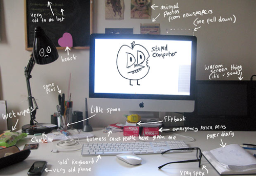

Desktops
Greg Stefano, coolhunting.comVirtual versus physical: Our conversation with six creative professionals about their workspaces
Our environment influences our behavior both physically and mentally, guiding our personal evolution to determine…
I love seeing other people’s workspaces, it gives me ideas on how I can improve my own.